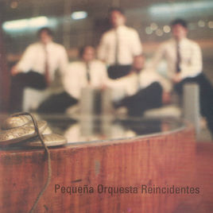
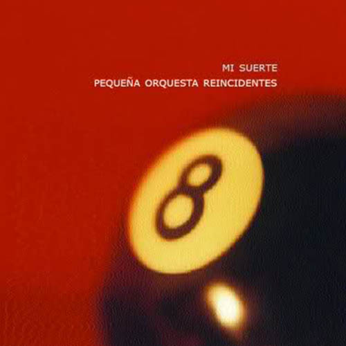
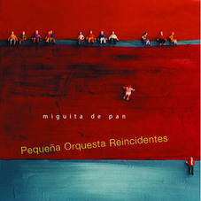
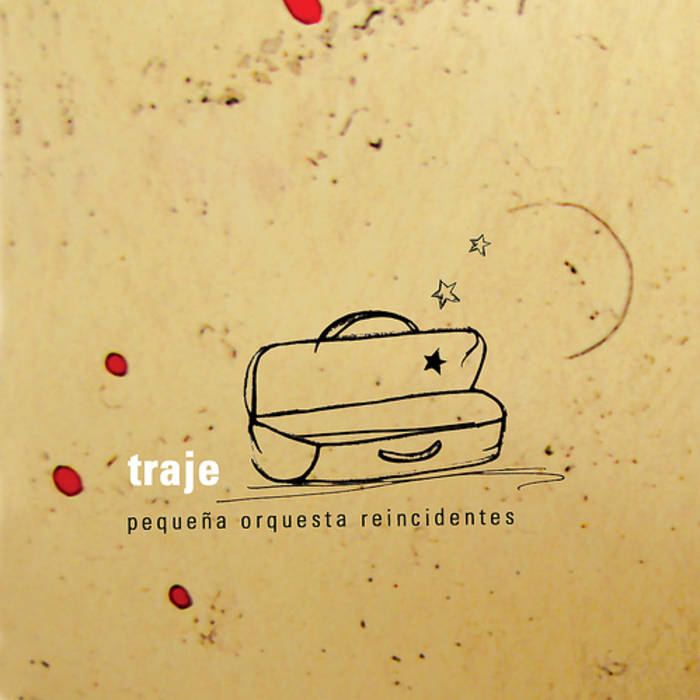

Home
Pequeña Orquesta Reincidentes fue una banda argentina de música. Su estilo es una síntesis de música y poesía de las grandes ciudades portuarias del Río de la Plata y el Litoral.
Pequeña Orquesta Reincidentes fue una banda argentina de música. Su estilo es una síntesis de música y poesía de las grandes ciudades portuarias del Río de la Plata y el Litoral.
Sus canciones demuestran referencias a la cultura inmigrante europea que pobló las ciudades rioplatenses. Estas marcas heterogéneas de música que trajo el Atlántico se combinan con un profundo romanticismo lírico. Combinaron ritmos de folklore del este de Europa, tonadas francesas, tango, vals, jazz, tintes gitanos, folk, rock con tintes oscuros y sombríos (al estilo Nick Cave), todo esto encarnado en variadas y poco convencionales combinaciones de instrumentos.
Surgidos de la escena under porteña de comienzos de los 90, su estilo inicial ancló en el dark rock, matizado por el tango y demás ritmos porteños. En el año 2000, con la salida del bajista Fernando Macer, incorporaron distintos instrumentos como banjos mandolinas tormpetas contrabajo y demás, que dieron lugar al sonido distintivo de la Pequeña Orquesta. En el 2007 salió su último disco, Capricho. Esta produción tiene versiones, propias y ajenas, en vivo o no editadas. En mayo de 2008 se separaron definitivamente sin realizar ningún concierto de despedida.
| Año | Album | Tapa | Canciones |
|---|---|---|---|
| 2000 | Pequeña Orquesta Reincidentes |  |
|
| 2001 | Mi suerte |  |
|
| 2003 | Miguita de pan |  |
|
| 2005 | Traje |  |
|